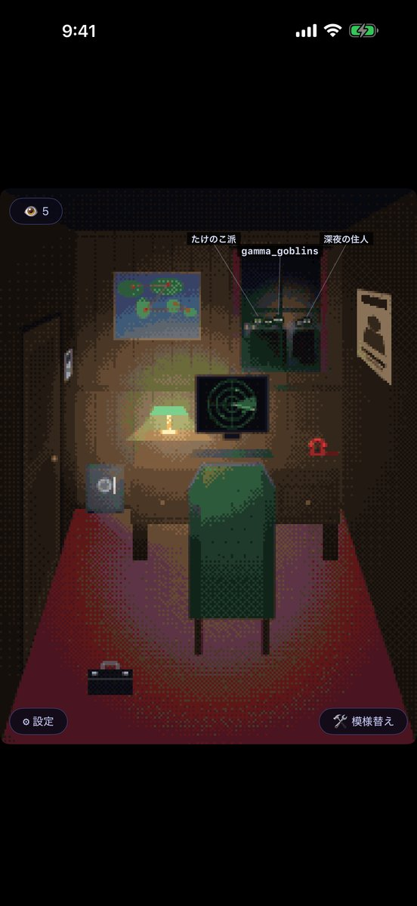
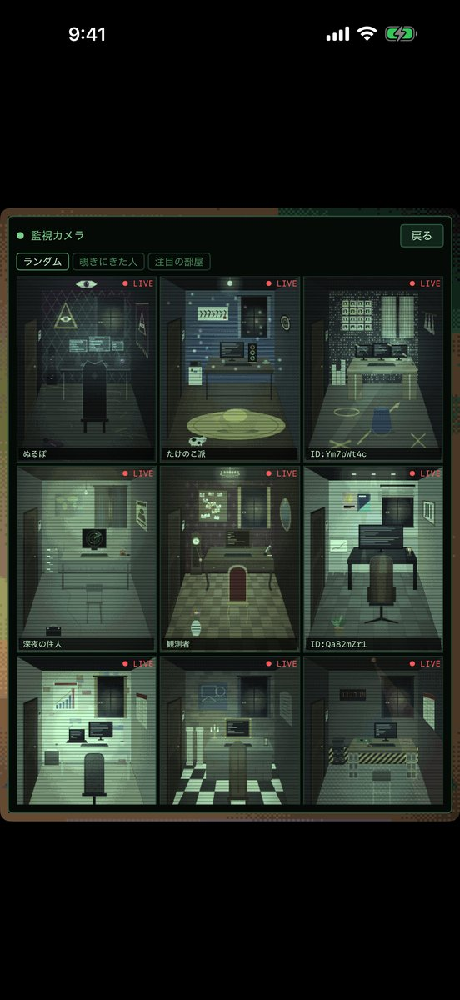
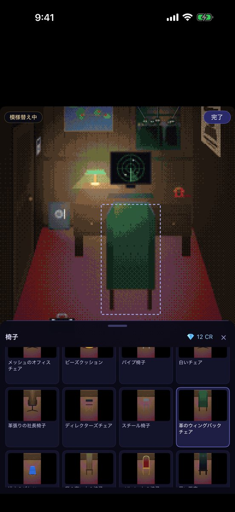
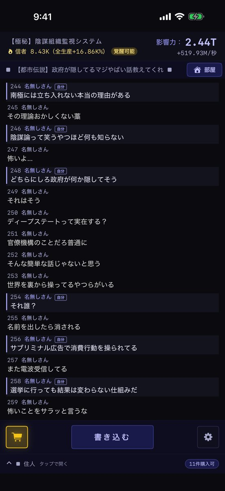
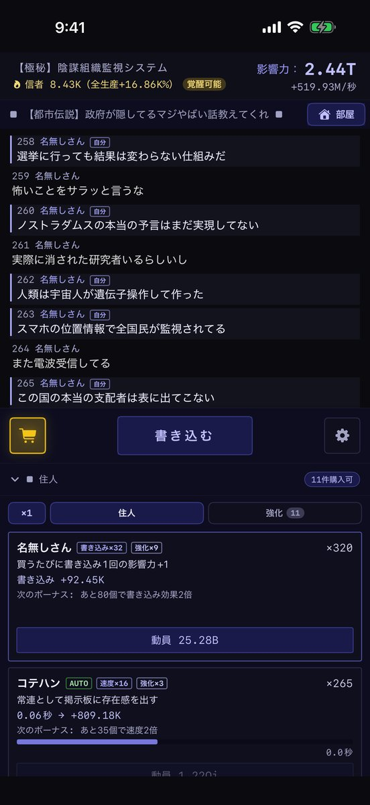
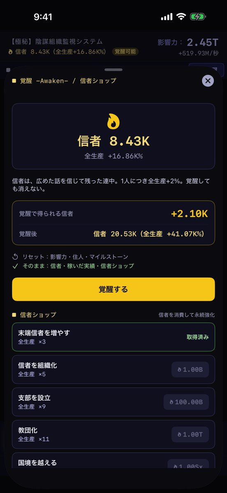

陰謀論クリッカー
匿名掲示板のスレを読みながら書き込み、陰謀論を広めて影響力を伸ばしていく放置クリッカーです。名無しさんから始めて、目指すは世界の黒幕。顔を上げると、そこはあなたの部屋です。
どんなゲームか
画面の上は、陰謀論のスレです。
「書き込む」を押すと、スレが進んで影響力が増えます。
増えた影響力で住人を集めると、押さなくても広まり始めます。
書き込むと広まる
押すたびに自分の書き込みがスレに流れ、名無しさんたちが反応します。書き込んだぶんだけ、影響力が増えます。
住人を集める
名無しさん、コテハン、まとめブログ、ステマ業者、インフルエンサー。15段階の住人が、放っておいても話を広めてくれます。最後はイルミナティです。
覚醒する
伸びが鈍ってきたら、すべてを手放して覚醒します。話を信じて残った「信者」は持ち越され、ひとりにつき全体の伸びが上がります。
スレを読む
遊びながら、掲示板をまるごと読めます。
1本のスレは1000レスで終わり、次のスレが立ちます。
70本のスレ
政府が隠している話、2062年から来た未来人、心霊スポット。笑えるものから、結末の分からない不気味なものまであります。
メインストーリー
「街の落書きを10年集め続けた」という報告から始まる、全10話のつながった話が、ほかのスレのあいだに挟まって進みます。
読み返しは後回し
覚醒したあとは、まだ読んでいないスレから先に出てきます。
部屋と覗き
2026年9月の 2.0 で足した、いちばん新しい遊びです。
掲示板から顔を上げると、ドット絵のあなたの部屋があります。
その部屋は、ほかの人から覗かれています。
模様替えする
机、椅子、壁の地図、床の金庫。家具は240種類以上あり、スレを読み切ったり影響力を伸ばしたりすると入荷します。
監視カメラで覗く
ほかの人の部屋が、監視カメラの映像で並びます。覗くと、相手の窓の外に、あなたの影と名前が1日のあいだ立ちます。
窓の外の誰か
覗かれると、あなたの窓の外にも影が増えます。覗き返すことも、窓を叩き返すこともできます。言葉は送れません。
見せたくなければ、設定から部屋を隠せます。
隠すとサーバー上の部屋は消え、誰の監視カメラにも映らなくなります。
画面






よくある質問
課金はありますか？
アプリは無料で、広告が入ります。ゲームを進めるための通貨は、アプリ内課金でも買えます。
出てくる陰謀論は本当の話ですか？
作り話です。スレも住人も、すべてゲームのために書いたものです。
部屋に出る名前は何ですか？
Game Center にサインインしていれば、そのニックネームです。していなければ「ID:」で始まる、自動で作られた文字列になります。
覗いてきた人と話せますか？
話せません。できるのは、窓を叩く、手を振る、といった決まった合図だけです。困る相手はブロックできます。ブロックすると、相手はあなたの部屋を覗けなくなり、合図も届かなくなります。
覗かれたくないときは？
設定の「部屋をほかの人に見せる」をオフにしてください。サーバー上の部屋と覗きの記録が消え、監視カメラに映らなくなります。ゲームの進み具合には影響しません。
しばらく開かないとどうなりますか？
閉じている間も、住人が影響力を広め続けます（最初は2時間まで。ゲーム内で最大10時間まで伸ばせます）。180日開かないままだと、サーバー上の部屋は自動で消えます。
データはどこに保存されますか？
ゲームの進行は端末の中と iCloud です。部屋の機能だけはサーバー（Cloudflare）を使いますが、氏名やメールアドレスは受け取っていません。詳しくはプライバシーポリシーをご覧ください。
サポート
不具合の報告、ご要望、使い方のご質問はこちらからどうぞ。個人で開発・運営しているため、すべてに返信できるとは限りませんが、いただいた内容はすべて目を通しています。
データの取り扱いについてはプライバシーポリシーをご覧ください。